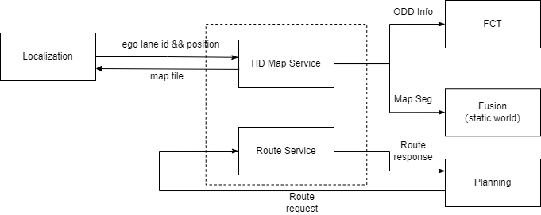
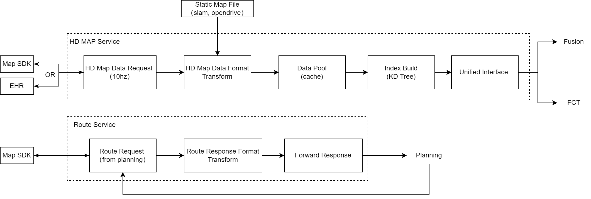

[deprecated] Map Service Software Design Proposal
This page will show the software architecture proposal for map service in WAVE3. This is not the final and only version.
Here is the overview between map service and other module. More detail can be found Draft - functional architecture - wave 3 development - Docupedia (bosch.com).

Since there are more memory and computation power on Nvidia Orin Platform than Dasy/MPC3, we can have more freedom for software design.
Map service software design proposal:

HD MAP Service
Data Request Layer
pull the data (e.g. 1km away) from map SDK or EHR every xxx ms.
if there is static map e.g. Opendrive, from map vendor or self built map, then the data request layer is not necessary. Just load the file to memory.
Data Transform Layer
adapt for different map vendor and fill the map data into our own structure
the interface can be defined by protobuf file later
Data Cache Layer
store the map data into different container or table, e.g. " std :: unordered_map "
filter the duplicated data
remove the old map data
Data Index Layer
a fresh new building each time → time consuming, shall work in "consumer-producer" mode.
build KD Tree index by position for the container above.
Unified Interface Layer
search xx by ID
search xx by position + range
other custom interface, e.g. distance to ODD
Route Map Service
Route Request Layer
listen the request from planning
pull the data from Map SDK (navigation engine)
Data Transform Layer
adapt for different map and fill the map data into our own structure
the interface can be defined by protobuf file later
Data Forward Layer
send back the route response to planning